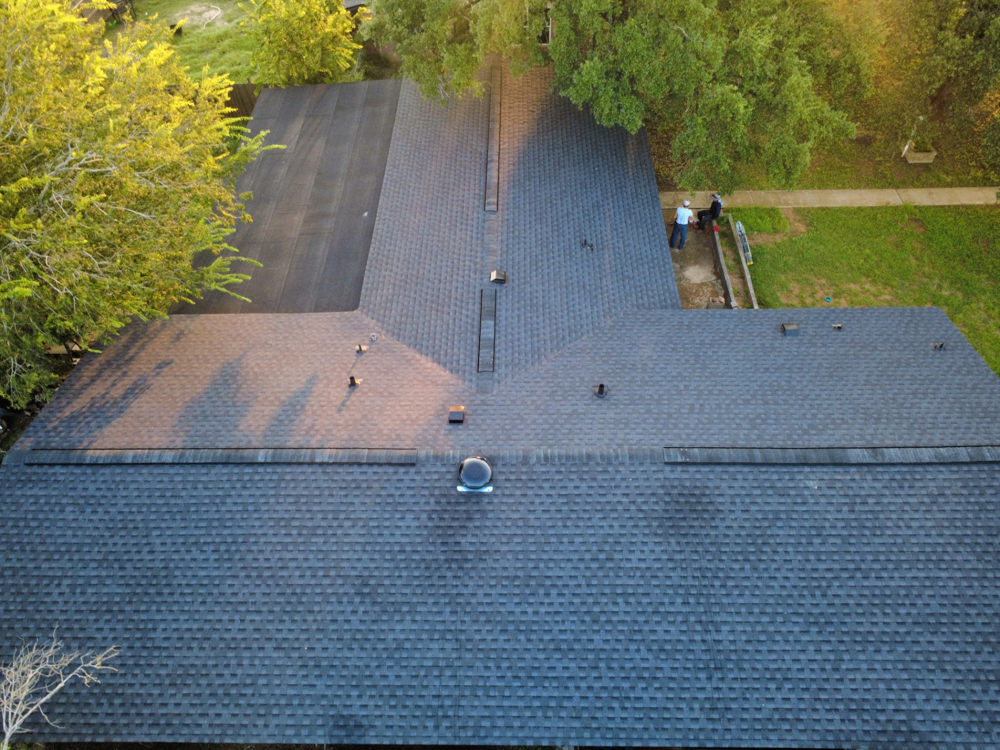
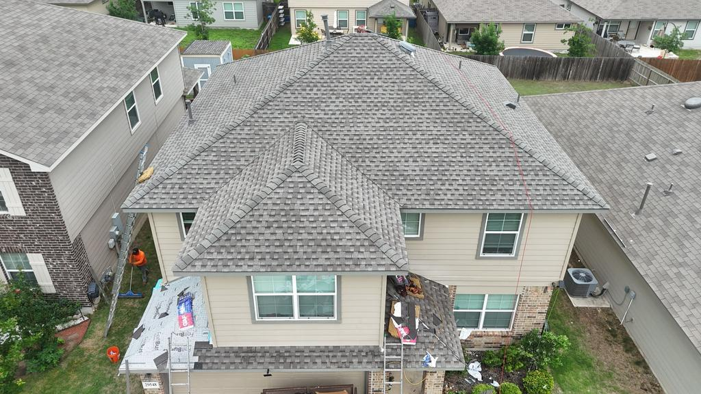
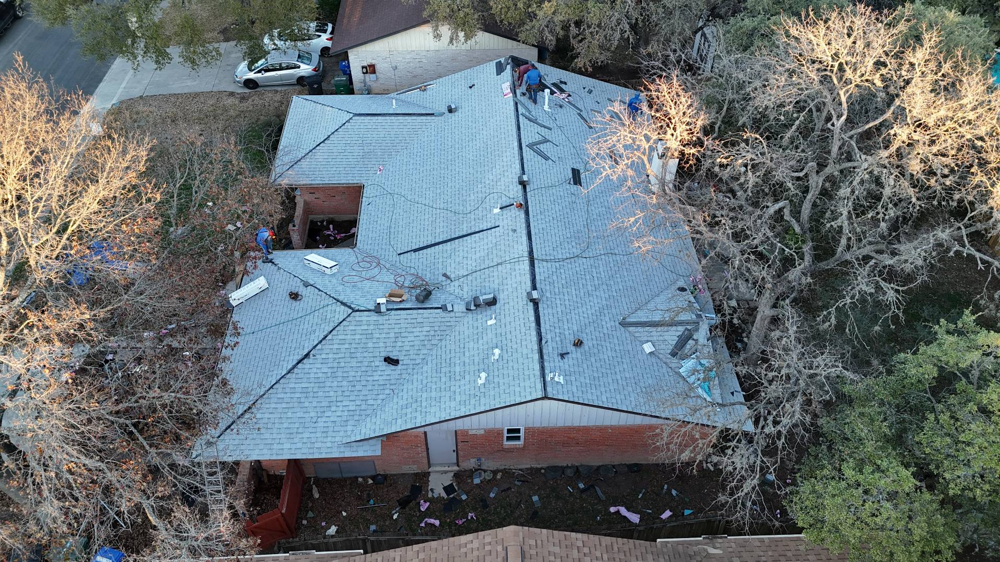
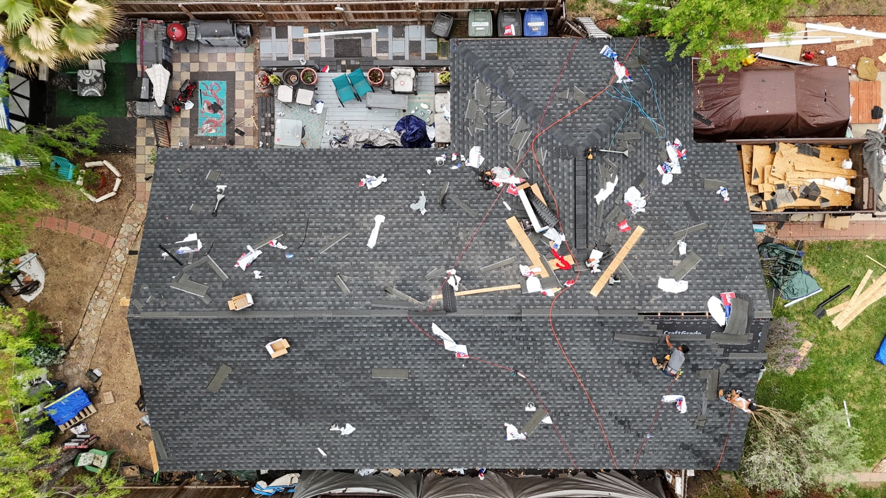
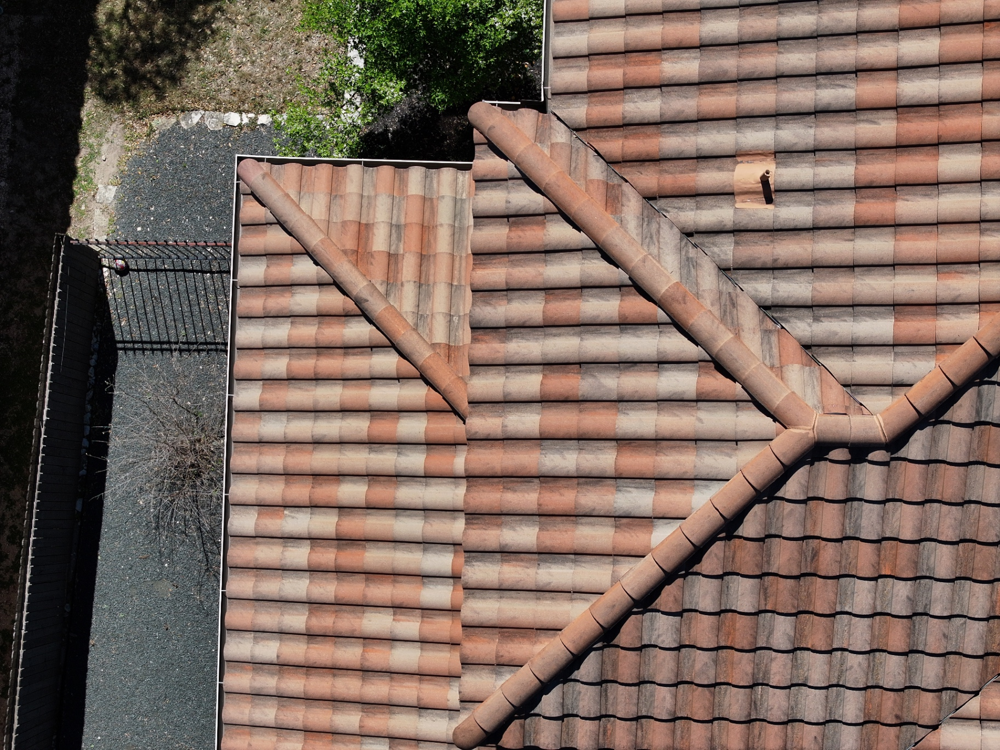
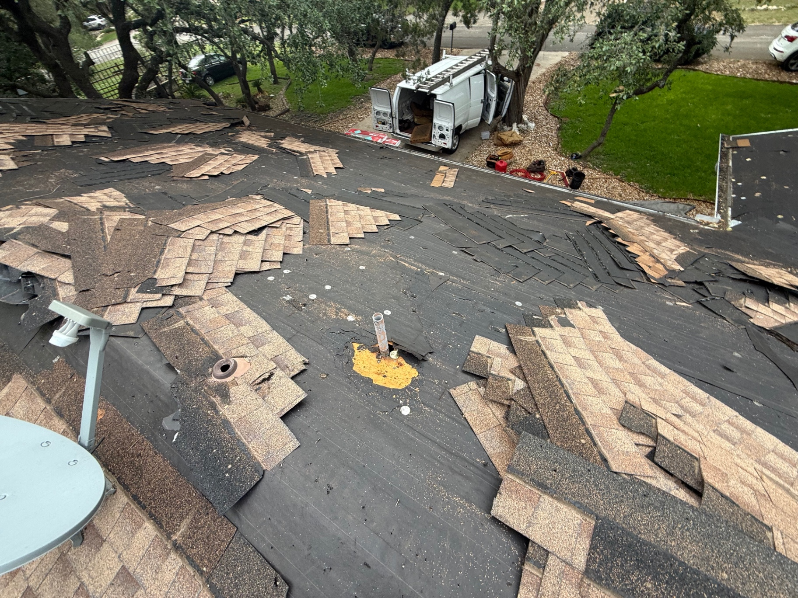

Project library
Every project here is a real completed roof.
Photographed, scoped, and documented, from tear-off and exposed decking through dry-in and final completion. Boerne to Pearsall, Stone Oak to Round Rock.

Pearsall
GAF Timberline HDZ Class 3 impact-resistant replacement
Completed Jun 2026
San Antonio
Full GAF system, Class 3 impact-resistant
Completed Jun 2026
Copper Canyon · Bulverde
GAF Timberline UHDZ complete system
Completed Jun 2026
Bulverde
Full replacement, complete GAF system
Completed May 2025
Spring Branch
Standing seam metal roof, concealed fasteners
Completed Apr 2025
San Antonio
Owens Corning white shingle replacement
Completed 2025
Stone Oak · San Antonio
Full residential replacement
Completed 2026
Helotes
GAF Timberline HDZ replacement
Completed 2026
West Side · San Antonio
Full residential replacement
Completed 2025
San Antonio
Tile roof repair
Completed 2025
Hollywood Park
Storm damage documentation, before
Documented 2026
Braun Station